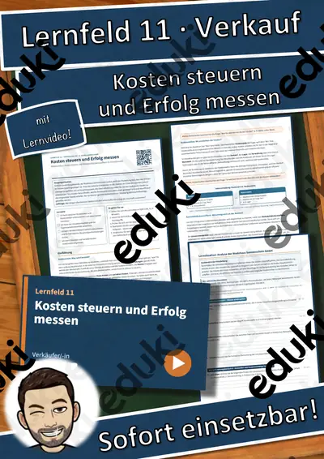
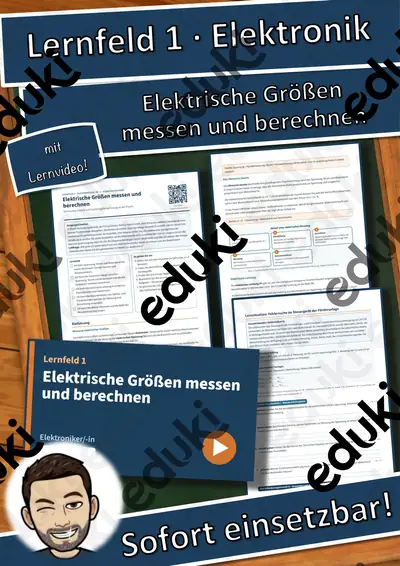

Das Sportabzeichen – Leistungen messen und vergleichen – Lesespurgeschichte mit Rätselaufgaben (Klasse 7)
Das Sportabzeichen – Leistungen messen und vergleichen – Lesespurgeschichte Sport (Klasse 7)Begib dich mit deiner Klasse auf eine sportliche Lesespur durch den Sportpark! Elif und Jannik nehmen am Sportabzeichen-Tag teil: Im Anmeldezelt erfahren sie, welche vier motorischen Grundfähigkeiten geprüft werden, auf der Laufbahn wird die Sprintzeit gestoppt, an der Sprunggrube lernen sie die Messregel beim Weitsprung kennen. An der Wurfanlage zeigt sich, dass Kraft und Technik zusammengehören, am Seilsprungplatz geht es um Koordination, auf der Ausdauerrunde um die richtige Tempoeinteilung, in der Schwimmhalle um den Schwimmnachweis – und im Ergebnisbüro um Leistungstabellen und die eigene Leistungsentwicklung. Ihre Stoppuhr Ticki ist immer dabei. Am Ende jedes Abschnitts verrät ein Hinweis den nächsten Ort auf dem Plan – nur wer genau liest, findet den Weg und sammelt alle geheimen Buchstaben zum Lösungswort.
Die perfekte Lesespur für den SPORTUNTERRICHT der 7. Klasse – ideal als Einstieg in das Thema Leistung, Training und Fitness: Sie verbindet sinnentnehmendes Lesen mit motorischen Grundfähigkeiten, Messregeln, Leistungsvergleich und Selbsteinschätzung. Das Material ist SOFORT EINSETZBAR und in DREI DIFFERENZIERUNGSSTUFEN (leicht ★ / mittel ★★ / schwer ★★★) angelegt.WICHTIG: Das komplette Material ist sowohl in FARBE als auch in SCHWARZ-WEISS enthalten – ideal zum Sparen von Druckkosten.DAS IST ENTHALTEN
- Lesespurgeschichte in 3 Niveaus (leicht, mittel, schwer)
- farbiger Lageplan als Suchkarte
- Hörverstehen mit QR-Code zur MP3 (selbstständiges Hören mit Kopfhörern)
- vier Aufträge auf dem Weg: ein Quiz, eine Rechenaufgabe (Summe, Durchschnitt, Prozent), eine Zuordnung und ein Steckbrief
- Rätselseite (Wörter-Suchsel + Fragen)
- Ausmalbild zum Thema (Sportabzeichen-Tag)
- ausführliches Lösungsblatt für die Lehrkraft
- alles zusätzlich als komplette Schwarz-Weiß-VarianteSO GEHT DIE LESESPURDie Jugendlichen lesen ab START, finden im Text den nächsten Ort, suchen ihn auf dem Plan und lesen bei dieser Station weiter. An jeder richtigen Station gibt es einen Buchstaben. Eingebaute Sackgassen (Imbissbude, Fahrradparkplatz, Geräteschuppen, Tribüne) sind keine Stationen und dienen der Selbstkontrolle. Am Ende werden die gesammelten Buchstaben umgestellt und ergeben ein geheimes Lösungswort. (Die Lösungen sind selbstverständlich nur im Lösungsblatt für die Lehrkraft enthalten.)INHALTLICHER SCHWERPUNKTDie Jugendlichen unterscheiden die motorischen Grundfähigkeiten Ausdauer, Kraft, Schnelligkeit und Koordination, lernen, wie Leistungen gemessen und mit Leistungstabellen verglichen werden, und reflektieren ihre eigene Leistungsentwicklung.ABGEDECKTER LEHRPLAN (Klasse 7, Sport)
- Sport (LehrplanPLUS Bayern) – Jahrgangsstufe 7 „Gesundheit und Fitness“, „Leichtathletik“, „Schwimmen“: motorische Grundfähigkeiten unterscheiden, Leistungen messen und dokumentieren, das Tempo einteilen, die Schwimmfähigkeit nachweisen.
- Deutsch – Lesen: Sachtexten gezielt Informationen entnehmen; Zuhören: einem Sachhörtext folgen (Hörverstehen mit MP3).
- Mathematik – Summe, arithmetisches Mittel, Prozentrechnung.
- Fächerübergreifend / Kompetenzen: Gesundheitserziehung, Selbsteinschätzung und Zielsetzung, genaues Lesen und Prüfen, kreatives Gestalten (Ausmalbild).
Geeignet für Freiarbeit, Stationenlernen, Vertretungsstunden, Wochenplan, Projekttage und Distanzunterricht. Klassenstufe 7.
Ähnliche Materialien

Arbeit und Leistung – was macht Arbeit wertvoll? – Lesespurgeschichte mit Rätselaufgaben (Klasse 9)

Weitsprung Lückentext mit Wortspeicher Hörverstehen und Suchsel

Das Zeitlabor – wie Uhren die Zeit messen und warum wir umstellen – Lesespurgeschichte mit Rätselaufgaben (Klasse 8)

Messen, Steuern, Regeln – das Gewächshaus mit Mikrocontroller – Lesespurgeschichte mit Rätselaufgaben (Klasse 8)

Lernfeld 11 Verkäufer/-in: Kosten steuern und Erfolg messen – Einführung, Übungen, Lösungen + Lernvideo

LF 1 Elektroniker/-in: Elektrische Größen messen und berechnen – Übungen, Lösungen + Lernvideo

Escape-Room Größen und Messen Klasse 4 – Mathematik Klasse 4 Grundschule: 6 Stationen, 2 Schlösser